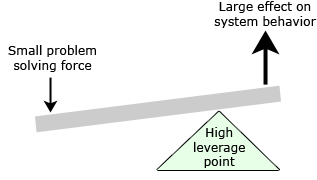

The concept of leverage is one of the most powerful in all of science. Archimedes proved the Law of the Lever and applied the law in a variety of inventions. Historian John Tzetzes, writing in the 12th century, wrote that Archimedes said"Give me a place to stand and with a lever I will move the world."
Leverage formula: leverage × force = change
The equation says that if you want to succeed in solving a difficult problem, then you must study the system so that you can find the high leverage points that will turn your limited amount of change force into enough change to solve the problem. If the equation is true then no other way will work.
On February 17, 2019 Montserrat Koloffon and Jack Harich discovered the concept of leverage efficiency, as it applies to an SIP analysis. Leverage efficiency is a measure of how well pushing on a leverage point resolves a root cause. If it's a high leverage point, 100% LE is defined as enough force to resolve the root cause. A low leverage point will by definition be incapable of achieving 100% LE, and will generally achieve less than 50%.
Negative leverage efficiency occurs when pushing on a leverage point makes the problem worse instead of better. A famous example of negative LE may be found in Jay Forrester's book, Urban Dynamics, 1969. The system dynamics model in the book showed how, of the four leading solutions to solving the US urban decay problem, solution effectiveness ranged from zero impact to highly detrimental. The most popular solution of them all, low-cost housing, was the most detrimental and made the problem MUCH worse. In other words, it had high negative LE. For further reading, see How the Urban Decay Crisis Was Solved.
|  | An example of a low leverage point would be pushing on the side of |